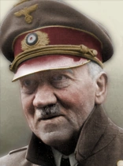
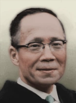
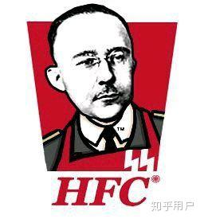

|  |
阿道夫·希特勒 |
第二次世界大战（1919-1945）
一战之后，希特勒成为了因德国向协约国投降而感到自己被祖国出卖的百万德国人之一。他于 1919 年加入了规模较小的德国工人党，并很快在于1921 年上升为该党领袖，并将该党更名为国家社会主义德意志民族社会主义工人党 （纳粹党）。 1923 年他组织了一场失败的啤酒馆政变并导致其余后一年在监狱里度过。在狱中，他撰写了《我的奋斗》一书。
获释后希特勒意识到纳粹党必须通过和平方式夺得政坛权力。1929年股市崩盘并引发大萧条，从而为希特勒提供了一次进军政坛的机会。1933 年，纳粹党控制了国会大厦的大部分席位。
保罗·冯·兴登堡总统任命希特勒为总理。兴登堡去世之后，希特勒开始计划将魏玛共和国转型为“第三帝国”。希特勒作为元首引领德国吞并了奥地利和捷克斯洛伐克，后来又通过二战取得了全面的胜利。
战后（1946-1962）
战争结束之后，希特勒赞助了包括亚特兰托帕大坝和日耳曼尼亚在内的各种大型项目的建设。尽管项目完成，但德国经济却在此过程中彻底崩溃了。大约在这段时期，希特勒开始变得越发古怪，有人推测这些变化可归咎于他的帕金森病。
在西俄罗斯战争期间党卫军发动政变未遂后，希特勒下令将党卫军分裂，并将希姆莱及其党卫军势力分派到勃艮第骑士团国。
以下为剧透内容！
继“太空领域”号登陆月球之后德国国内举行了一场盛大的庆祝活动，然而一名刺客趁乱差点杀死了希特勒。此次行动导致了一场大规模恐慌，政府不得不宣布戒严。这次的突然袭击充分表明了希特勒没有继承人这一点。如果希特勒死了，没有人可以代替他，而即使在他活着的时候，权力争夺者们也同疯狗一般明目张胆地互相撕咬。
1962年，希特勒作为德国元首进入了他统治的第29个年头，尽管大多数人都清楚他的日子已经屈指可数了，一旦他去世，纳粹党派系之间的竞争可能会彻底撕裂他一生为德国奋斗而来的事业。 |
|  |
高宗武 |
中华民国领袖
人生总有十字路口，无论往哪里走都是一番独特的景象，然而造化弄人，命运早已注定。对高宗武来说，他人生中的十字路口在一个风雨交加的夜晚，那时轮到他来广州了。他在心中仔细思索着汪兆铭提出的中日协议。这份决定国运的协定让他的心中五味杂陈，脑中思绪万千。它心中有着对领袖和导师的忠诚；有着因耻辱而油然而生的怒火；多种思想的碰撞，让他的情绪错综复杂了起来。突然一个问题从他的脑海里冒了出来，如同熬汤时汤面突然泛起的浮渣：他是谁？
他咳了一声。在他面临的所有道路中，只有他的慢性肺结核还告诉他他还是一个人。他想，当一个两人不闻窗外事的教授是多么幸福啊。然而，在九州帝国大学接受教育的他，似乎从一开始他的命运就与中日两国的关系纠缠在了一起。尽管患有慢性肺结核病，他还是接受了汪的邀请，加入外交使团。高宗武非常适合这份工作：毕竟，他能说一口流利的日语：他身边的同龄人都说，他的日语天赋甚至超过大多数日本人。虽然听起来像是拍马屁，但高的个人魅力是不可否认的。
然而，尽管高的立场在两国的边界处，但他发自内心的热爱自己的国家。他敬佩国父，并相信汪继承了他光芒万丈的理想。尽管汪的继承的理想没有传下去，但在周佛海和陈功伯双双倒台后，高现在独掌大权了。他经常回想起在广州的那个晚上：真是时过境迁啊！
他意识到，木已成舟。除了赎罪，别无选择。 |
|  |
希姆莱 |
在20世纪50年代，帝国陷入了严重的危机。他的经济正在崩溃，他在西俄战场上连连败退。希姆莱对纳粹党忠心耿耿数十年，但此时他有了信仰危机。他开始相信，国家社会主义是一种无能的意识形态；它腐败、枯朽，而且过于软弱，他认为自己的任务是使德国重新走上正轨。从{东}巴黎到莫斯科，希姆莱的ss幕僚准备推翻政府，控制帝国。由于汉斯·斯皮德尔{此人曾多次避免德国内战}的拥护者的干预，这次政变失败了；然而，希姆莱的党卫军过于庞大，在军中的影响太大了，不能简单地就地解散,草草了事，因此希姆莱的建立党卫军控制的勃艮第占领区的计划得以实现，希姆莱和他的党卫军支部有了一个立足点，他们可以在不触动日耳曼尼亚政府的情况下实现他们的疯狂的计划。当60年代来临时，希姆莱和勃艮第变得更加孤立，更加强大，更加混乱。随着忠诚的党卫军队伍遍布欧洲，希姆莱的宏伟计划比以往任何时候都更接胜利。
|